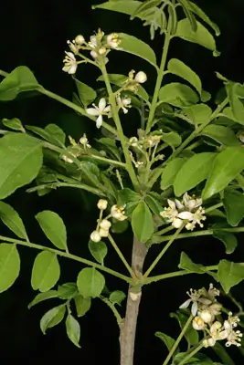

pranet · 出典付きの植物図鑑
സുഗന്ധവേപ്പ് ☠
Clausena anisata (Willd.) Hook.f. · Rutaceae

Clausena anisata is a deciduous shrub or small tree, belonging to the Rutaceae (citrus) family, and widespread in the Sub-Saharan Africa, but absent from drier regions. It is also found in tropical and South-East Asia, India and Sri Lanka. It is cultivated in Malaysia and Indonesia. As with other plants useful to mankind its large range of medicinal properties has led to a global distribution and its growth wherever the climate is suitable. It grows in higher-rainfall regions in savanna, thickets, riverine forest, disturbed areas and secondary forest, up to an altitude of 3000 m. The leaves, which are foetid when bruised, give rise to the common name horsewood or the more descriptive Afrikaans common name perdepis, meaning 'horse urine'.
出典: Wikipedia (en): Clausena anisata · CC BY-SA 4.0
異名: Amyris anisata Willd., Amyris dentata Willd., Amyris inaequalis Spreng., Amyris nana Roxb., Amyris suffruticosa Roxb., Clausena abyssinica Engl., Clausena bergeyckiana De Wild. & T.Durand, Clausena dentata (Willd.) M.Roem., Clausena dunniana H.Lév., Clausena inaequalis (DC.) Benth., Clausena longipes Craib, Clausena nana Wight & Arn., Clausena odorata C.C.Huang, Clausena pobeguinii Pobég., Clausena pubescens Wight & Arn., Clausena suffruticosa (Roxb.) Wight & Arn., Clausena vestita D.D.Tao, Clausena wightii M.Roem., Clausena willdenowii Wight & Arn., Cookia anisata Desf.
同定や利用は自己責任でお願いします。この図鑑だけを根拠に野生の植物を食べないでください。
出典
- 学名: World Flora Online Plant List 2026-06 · CC0 1.0
- 名前: Wikipedia の記事名と Wikidata · CC0 1.0（Wikidata）。記事名は事実
- 説明: Wikipedia (en): Clausena anisata · CC BY-SA 4.0
- 食用・毒性: World Checklist of Useful Plant Species (Diazgranados et al. 2020, RBG Kew) · CC BY 4.0
- 分布: World Checklist of Vascular Plants (WCVP), RBG Kew, version 2026-06-04 · CC BY 3.0
このページは pranet のデータから自動生成しています。コードは MIT、データは項目ごとのライセンス（説明）。